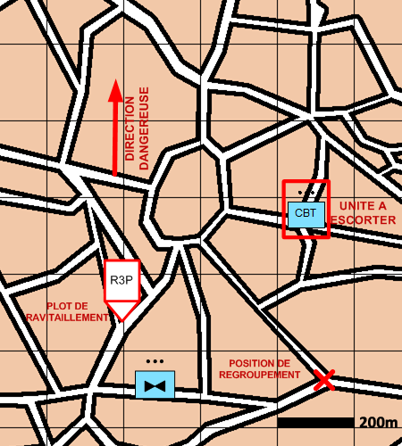

NIVEAU : Pion
ARME : ALAT
MISSION : Escorter
NIVEAU : Pion
ARME : ALAT
MISSION : Escorter
Schéma de modélisationEscorter |
Paramètres obligatoiresDirection DangereuseOrientation privilégiée des capteurs lors de bond ou de reconnaissance de points. Unités à escorter Liste de(s) unité(s) à escorter. Dans le cas où l'on souhaite appuyer une compagnie entière dont l'automate de commandement est embrayé, il suffit de passer son PC en paramètre.. Point de regroupement Point à rejoindre une fois que la mission est terminée. Cibles Prioritaires Paramètre perméttant de favoriser la prise à partie des unités en fonction de leurs types. Portee Action Permet, en association de l'Ambiance Mission de déterminer les quantités de carburant embarquer à chaque ravitaillement. Ambiance Mission Permet, en association de la Portée Action de déterminer les quantités munition à embarquer à chaque ravitaillement (aa = air/air, as = air/sol). |
|
Paramètres optionnelsLimite gauche / Limite droiteLignes de Début et Fin de mission [LDM/LFM] : permettent d'orienter le fuseau. Lignes de Changement d'attitude [LCA] : Passage en vol tactique Lignes de Coordination [LC] : la patrouille se poste en attente de l'ODC Poursuivre. Plots ravitaillement : Les plots passés en paramètre pouront être utilisés dans le cadre de la mission. Cette liste est automatiquement mise à jour avec les plots créés dans le fuseau de la mission. |
||
 |
Fiches missions |  |